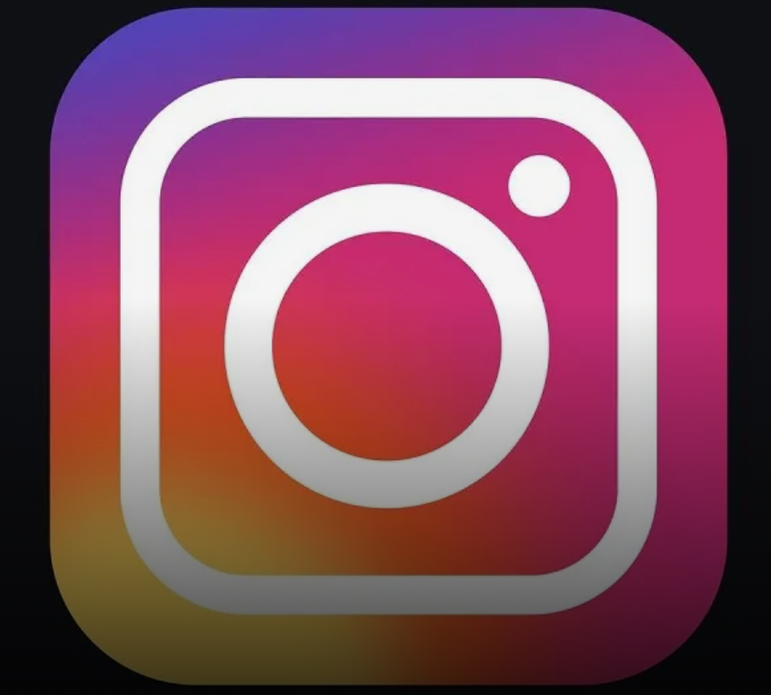

Instagram Clone
It is simply a clone app for a famous social media application named as INSTAGRAM it is only for fun based and for learning process as well.
Used React for front-end of the app.
Used Node.js and express module for backend development.
Used socket-io for making it real time.
Technologies:
- - Node.js
- - Express.js
- - React